The synApps softGlueZynq
module enables EPICS users and
application developers to construct small, simple, digital electronic circuits,
and to connect those circuits to field wiring, all by writing to EPICS PV's.
Because the circuits and field connections are defined entirely by EPICS PV's,
they can be autosaved
and restored, saved as text files (for example, as configMenu
files), emailed from one user to another, etc. softGlueZynq also provides
control over how hardware interrupts are generated by field I/O signals, how
they can be dispatched to cause EPICS processing, and how user-written
interrupt-service routines can be registered for execution in response to a
specified interrupt source.
The name softGlue was intended to suggest glue electronics implemented
by software, where glue electronics means those little bits of digital circuitry needed to
connect two or more larger pieces of digital electronics into a working whole. softGlueZynq
is a rendition of softGlue for the Xilinx Zynq device, which is the combination of an FPGA and
a processor running Linux.
softGlueZynq does this by loading the Zynq FPGA with a predefined collection of circuit
elements (logic gates, counters, flip-flops, etc.), whose inputs and outputs are connected to
switches controlled by EPICS PV's. softGlueZynq provides a user interface for controlling those
switches, allowing inputs and outputs to be marked with user-specified names, and connecting or
driving inputs and outputs according to those names.
Here's the underlying idea, schematically:
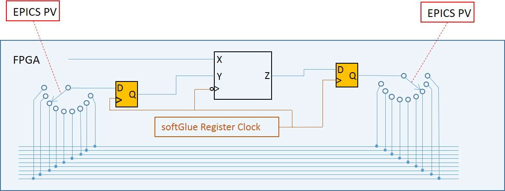
The box containing X, Y, and Z
represents a softGlue component. The 15 wires at the botton of the figure
represent the softGlue signal bus. Output Z is connected to input
X, because their switches select the same softGlue signal bus
line.
The synchronizing flipflops are not of much interest to an end user; their
purpose is to tell Xilinx routing software how much time it has to get a signal
from the input flipflop to the softGlue component (note: clocked on the falling
edge), from the softGlue component to the output flipflop, and from the output
flipflop through the switches to all input flipflops. This arrangement sets the
maximum frequency of signals that can be transported on the signal bus to be
half the frequency of the softGlue register clock. Currently, the softGlue
register clock is 100 MHz.
Requirements
To use softGlueZynq, you must have the following hardware and software:
softGlueZynq is intended to be useable with any Zynq device, and
will certainly be ported to one or more versions of the PicoZed, but the
FPGA-load files, databases, and MEDM displays supplied in this version are for
the MicroZed 7020. The first version of softGlueZynq was also useable on the
MicroZed 7010, but that device's FPGA is too small to contain this version,
and it will no longer be supported.
This tool is needed to build some softGlueZynq
databases.
MEDM, or caQtDM, or CSS-BOY, or the ability to adapt some other display
manager, or Channel Access client, to implement softGlueZynq's user
interface.
Some of the softGlueZynq databases, displays, and examples
presume the availability of synApps modules such as calc and busy, but these
are not needed for any essential feature of softGlueZynq. You're probably
going to want autosave, release 5.7 or higher, because it makes loading and
saving circuits very easy. SoftGlueZynq includes a 16-input scaler and
support for the scaler record, which record is in the std module.
You do not need to be able to program the Zynq FPGA. In the default
implementation, the FPGA content is programmed automatically into the module at
IOC-boot time. A Xilinx .bin file is included with softGlueZynq for this
purpose. softGlueZynq loads the FPGA on every IOC boot, though it's also
possible to reboot the IOC without affecting a running FPGA.
If you have a copy of the Xilinx Vivado software, you can load your own custom
FPGA content into the module, and use softGlueZynq to talk to it. Code and
instructions for reproducing the softGlueZynq Vivado project are in
softGlueZynq/documentation/Vivado.
Capabilities
Here are a few examples of the sorts of things that can be accomplished with
softGlueZynq and EPICS:
With no programming at all, softGlueZynq functions simply as a
digital I/O module.
Conditionally send a trigger signal to a detector after every N steps of a
stepper motor.
Conditionally send a trigger signal to a detector after every N(i) steps of
a stepper motor, where N(i) is an array of step-interval numbers.
Gate a detector off during the acceleration and deceleration portions of a
steppermotor's motion.
Send a trigger to a detector precisely 23.003 ms after sending a trigger to
a shutter.
Conditionally trigger the execution of an EPICS record on the change of
state of an external signal.
Implement an extraordinarily smart trigger signal for an oscilloscope.
Implement efficiently a timer useable by EPICS software, with a time
resolution that is much better than the system clock's resolution. (With this,
you can for example cause an EPICS database to wait for 0.7 ms.)
Implemented circuit elements
In this version of softGlueZynq, the FPGA is programmed with the following
circuit elements:
Four AND gates
Four OR gates
Four noninverting buffers
Two XOR gates
Four D flip-flops
Two 2-input/1-output multiplexers
Two 1-input/2-output demultiplexers
Four 32-bit up counters
Four 32-bit down counters
Four 32-bit divide-by-N counters
Four 32-bit up/down counters
Four gate&delay generators
Two quadrature decoders
One frequency counter
One one-input, 64 channel histogramming scaler on the softGlue signal bus.
One one-input, 64 channel histogramming scaler direct connected to field
I/O.
Two "pixelTrigger" components, configured as an x-ray microscope
data-acquisition system.
One seven-input multichannel scaler. (This is actually just the
pixelTrigger acquisition system operating in "list" mode.)
36 field-input bits (24 LVCMOS, 12 LVDS)
24 field-output bits (LVCMOS)
One 10 MHz clock signal (Clock frequencies can be changed at run time.
See Miscellaneous configuration below.)
One 20 MHz clock signal
One 50 MHz clock signal
One variable frequency clock signal
Analog Processor circuit elements
In addition to the above listed components, softGlueZynq includes the ability
to handle analog values in much the same way it handles digital values. This is
accomplished by encoding analog values as bit streams that can be put on the
softGlue signal bus. This is currently rudimentary: only proof-of-principle
components have been written, and there is no input or output capability. These
circuit elements are in a separate FPGA-load file ("analogProc"), which also
includes an abbreviated version of the digital components in standard
softGlueZynq.
Two two-input sum circuits
Two two-input difference circuits
Two two-input normalized difference ((a-b)/(a+b)) circuits
Four low-pass filters
Two two-input multiply circuits
Two two-input divide circuits
Installation and deployment
The simplest way to deploy softGlueZynq is to download and build the module
iocZed, which uses softGlueZynq as a support module, and which contains code to
load and run it on a MicroZed. iocZed can also include as much or as little of
the rest of synApps as you want. It's essentially a custom copy of the synApps
xxx module. As delivered, iocZed is ready for all non-VME dependent synApps
modules, and will build with whatever modules are defined in
synApps/support/configure/RELEASE. Even if you don't want to use
the MicroZed as a general purpose soft IOC, you're probably going to want
modules like autosave and calc. If you want to use the included 16 input scaler
with the scaler record, you'll need the std module.
Before I get started, there are a lot of different ways to run Linux,
EPICS, and FPGA code on the MicroZed. I'm not an expert, but I found a way that
is similar to the way we run vxWorks and soft Linux beamline IOCs at the
Advanced Photon Source, and that's what I'm going to describe. We build EPICS
and synApps on the read-only file system /APSshare, and build
IOC-application directories on a read-write file system
/net/sNdserv/xorApps/epics/ioc. You're going to do whatever
you want, of course; I'm just telling you this to make the description more
understandable.
The file assembleBaseAndSynApps.csh
is a script you can run to get EPICS base and synApps (including softGlueZynq
and iocZed) from web sources. Comments at the bottom of the file detail the
edits you'll have to make to get everything to build.
Building softGlueZynq
The supported way to build SoftGlueZynq and iocZed is to cross compile. You
will need a copy of the Xilinx
Software Development Kit. (You'll need to get a license, but the
license is free.) In the file MicroZed_PetaLinux_Prep.txt is a
detailed recipe explaining how to configure EPICS base to cross compile for the MicroZed's
linux-arm processor, and how to do some other stuff that you won't need to
do unless you write custom FPGA components.
Edit softGlueZynq/configure/RELEASE, to specify the paths
to EPICS_BASE, ASYN, and any other modules you want.
Edit iocZed/configure/RELEASE, to specify the paths to
SUPPORT.
Run make in the top-level directories of softGlueZynq and iocZed, using the
same make executable used to build EPICS base.
The softGlueZynq build will issue a warning that it can't expand all macros
in substitution files. This is not an error; unexpanded macros are intended
to be defined at boot time. (Note that version 1-4 of msi
returns an error, which causes the softGlueZynq build to fail, after writing a
database file that contains unexpanded macros.)
Deploying softGlueZynq to an IOC
A PetaLinux operating system image is included with softGlueZynq. This
image sets up the Linux directory tree and starts Linux. PetaLinux is a
memory-resident OS, so nothing you do in the PetaLinux file system will ever
survive a reboot. For this reason, we put all the EPICS code on an served
file system, have the MicroZed mount that file system, and run EPICS from
there.
Let's say you want to use the IOC prefix "yyy:". On a workstation, in
a copy of iocZed:
make distclean
changePrefix zzz yyy
changePrefix is a script in the synApps utils directory. Its
purpose is to customize a copy of the synApps xxx or iocZed module as an
IOC-boot directory.
make
chmod a+w iocBoot/iocyyy
chmod a+w iocBoot/iocyyy/autosave
chmod a+x iocBoot/iocyyy/run
edit start_epics_yyy to set EPICS_APP and
EPICS_APP_ADL_DIR.
edit iocBoot/iocyyy/run to set the environment variable
PATH to the directory that has executables for linux-arm.
edit iocBoot/iocyyy/softGlueZynq.iocsh to select the "system()"
command that will load FPGA content matching your MicroZed version.
In softGlueZynq/documentation/SD_card, find the directory that matches
the MicroZed version you have. Untar it, edit userConfig
according to instructions in that file.
The strategy for mounting NFS
disks and arranging for directory names to look the same on the MicroZed as
they looked on the workstation that built EPICS software is likely to
change, and it must match Linux-initialization code that will have been
built into BOOT.BIN and image.ub, so I'm not going
to document it here.
Copy userConfig, BOOT.BIN and
image.ub to a MicroSD card, and insert the card in the
MicroZed.
Ensure that the MicroZed's jumpers are set to boot from the MicroSD card:
JP3: 2-3, JP2: 2-3
Power the MicroZed. If it succeeds in getting an IP address via DHCP, ssh
to root@<IP address>, or to the user account you specified in userConfig.
See if NFS mounts succeeded. If not, you might be able to do them by
sourcing doMounts.sh.
The alias iocgo should take you to the IOC directory.
You shouldn't need to modify anything here, except to select the
system() command that loads the copy of
softGlue_FPGAContent_70x0.bin for the MicroZed model you have.
Customing softGlueZynq FPGA content and Petalinux code
The Vivado and Petalinux projects are included in softGlueZynq, in the event
you want to customize either or both of them. See the file MicroZed_PetaLinux_Prep.txt in the
softGlueZynq documentation directory, which will lead you to
documentation/Vivado and/or documentation/PetaLinux.
User's Manual
Most of the essential user-interface information — how to connect signals, what the display
elements mean, etc. — is contained in the descriptions of the "User Menu" and "AND" sections
below. The remaining sections are mostly for completeness, though some circuit elements do require
further explanation, and the counter sections introduce new display elements for registers
containing decimal numbers.
We're going to have a little trouble with the meanings of "input" and "output", because they
imply a viewpoint, and because we're going to be taking three different viewpoints: those of EPICS
records, circuit elements, and field-wiring connectors. Usually, in EPICS, we think of an output as
something to which an EPICS record can write, but that definition would be awkward here, because it
would eventually require us, for example, to refer to the output of an AND gate as an "input". You
just can't discuss digital circuitry intelligibly from that viewpoint.
Therefore, in this documentation, "input" and "output" will normally be from the viewpoint of one
of the circuit elements we'll be wiring. Field I/O will be an exception, because it's most
conveniently discussed from the viewpoint of the field-wiring connector.
MEDM user interface
User Menu
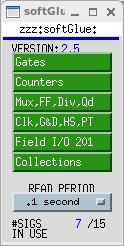
softGlueZynqMenu.adl is the top softGlueZynq display, which serves mostly to call up other
displays. The menu labelled READ PERIOD specifies the period at which the values of
all signals are sampled for display to the user. #SIGS IN USE
shows the number of signal names you have defined.
Most softGlueZynq displays are not interrupt driven. (That would be a disaster, because
inevitably some signals will change state at high frequency.) So, the states of inputs and outputs
must be sampled periodically, for display to the user.
We've found that it's confusing for users if the poll period is greater than
around 1 second. We've also found that polling everything at .1 second uses
around 2 percent of the MicroZed's CPU.
AND
On the left of the AND gate are the inputs, each comprised of a blue "= button", a yellow
text-entry field, a number, and what's intended to look like a red LED. On the right are
essentially the same things in reverse order, but an output's text-entry field is a different
color. The text-entry fields are used to connect signals together, and the color difference is
intended to remind you of the only rule governing signal connections: if you connect two or more
outputs together, those outputs won't work.
softGlueZynq outputs are engineered to ensure that you can't break anything by connecting
outputs together, but the circuit won't be useful until you fix the error, because the states of
outputs connected together are undefined. Currently, softGlueZynq doesn't signal this error by
putting offenders into an alarm state.
The yellow text-entry box controls an input. You have three options:
Leave empty.
Inputs with empty text-entry boxes default to logic value 1.
Enter a string that begins with a number.
This directly writes a logic value (optionally, a pulse) to the input.
softGlueZynq will parse everything that looks numberish, and convert to a floating point value. This
sets the input to a logic value: 0 if the nearest integer to the converted value is zero, 1 if it's
not.
Allowing floats, and extra characters after the number makes it easier to drive softGlueZynq
inputs with calcout records, replies from serial devices, etc.
The strings "0!" and "1!" (possibly followed by other ignored characters)
direct softGlueZynq to write a pair of logic values: "0!" writes "0" followed
immediately by "1"; "1!" writes "1" followed immediately by "0". The time
interval between writes is system dependent, and not at all guaranteed, but it
should be much smaller than the interval you could achieve from separate
writes. On an MicroZed 7020, I measure around 3.5 μs.
Enter a string that begins with something other than a number.
This names the signal, and connects it to all other signals with the same name (or with the
same name followed by '*', as described below). Case is significant in comparing
signal names.
Note that a "signal", as the word is used in this documentation, is a named connection
between softGlueZynq circuit elements. It might be more intuitive to think of a "signal" as a wire,
to avoid confusing it with, say, field I/O.
If you want to use the inverted value of a signal for input to some component, append
'*' to the signal name. This doesn't change the signal that the input is
connected to, but just tells softGlueZynq to run the signal through an inverter before applying it
to the input. Note that output signal names may not end with '*'.
In MEDM, you can use Drag-And-Drop to connect a named signal to some other
signal. When you drop, MEDM will put the PV name of the signal you dragged
from. When you press <Enter>, softGlueZynq's device support will write the
signal name of the source PV to the destination PV.
In caQtDM, you can select the text of a signal name, and use Copy/Paste
(^C/^V) to copy the signal name from one text-entry box to another.
Whatever option you choose, you can define at most fifteen different signal names. When you try
to define the 16th name, softGlueZynq will erase whatever you wrote, and put the record into the
"INVALID" alarm state. (But note, for example, that reset and reset* are
not different signal names, because the trailing '*' is not regarded as part of the
name; it merely describes how the signal should be used.)
Text-entry boxes for output signals won't accept names beginning with a number, or ending with
'*'. (softGlueZynq will simply strip the offending characters, and leave the rest.)
A signal name beginning with a number can only be a direct-write command; it cannot connect
things together, because the leading number would be misinterpreted by input-signal-name parsing as a
direct-write command. Output-signal names ending with '*' are logically sensible, but are
not permitted; this simplifies the implementation of '*' appended to input-signal names.
A signal's blue "= button" is used to find all other signals to which the signal is connected.
While a signal's "= button" is pressed, input signals connected to it are bordered in green, and output
signals connected to it are bordered in orange. If you ever see two or more orange borders at
the same time, you have outputs connected together, and your circuit won't work.
The little red and black filled circles (LED's), and the numbers next to them, display the states
of their signals. These display elements are updated at the period specified in the
softGlueZynqMenu.adl display. If you want the EPICS PV name corresponding to a signal's
logic value, this is the PV name to use.
For completeness, here's the truth table for an AND gate:
input1
input2
output
0
x
0
x
0
0
1
1
1
'x' means "either 0 or 1".
OR
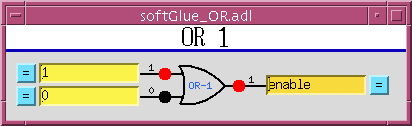
input1
input2
output
0
0
0
1
x
1
x
1
1
BUFFER
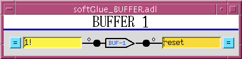
The purpose of the buffer element is to permit EPICS to drive several softGlueZynq inputs
by writing to a single PV, without using up a more valuable circuit element, such as the XOR gate below.
INVERTING BUFFER
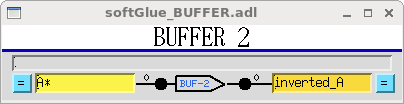
There is no inverting buffer - or any other inverting gate - in softGlueZynq. Signal inversion is
accomplished by appending '*' to the name of a signal used as as input to any logic element, as
demonstrated above for the buffer element. Note that '*' appended to the name of an output
signal will be removed.
XOR
input1
input2
output
0
0
0
0
1
1
1
0
1
1
1
0
D FlipFlop
The input signal labelled ">" is the "clock" input. Unlike other signals, clock inputs are
edge sensitive. All clock inputs in softGlueZynq act on the rising edge of the input signal.
The open circle ("bubble") in the SET and CLEAR inputs' signal paths indicate
that these signals are inverted before being used. Thus, applying '0' to the CLEAR input causes
the output to be "cleared" (given the value 0). SET and CLEAR
are asynchronous: they act immediately, and don't wait for the next clock edge.
SET
CLEAR
D
> (clock)
Q
0
0
x
x
undefined
0
1
x
x
1
1
0
x
x
0
1
1
any
rising edge
DBEFORE (value D had immediately before the rising edge of the clock signal)
2-Input Multiplexer
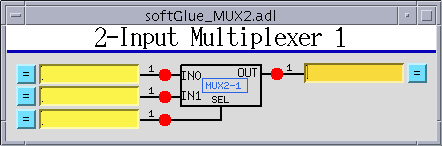
When SEL==0, OUT=IN0. When SEL==1, OUT=IN1.
2-Output Demultiplexer
When SEL==0, OUT0=IN, and OUT1 is undefined (currently
0). When SEL==1, OUT1=IN, and OUT0 is undefined (currently
0).
Up Counter (32-bit Counter)
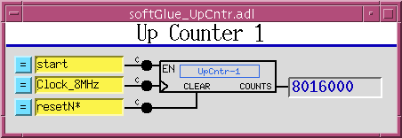
EN==1 enables the clock (">") input, whose rising edge increments the counter value.
CLEAR is asynchronous, and acts whether or not EN==1.
Down Counter (32-bit Preset Counter)
EN==1 enables the clock (">") input, whose rising edge
decrements the counter value. When LOAD==1 the counter is loaded
immediately with the value applied to the PRESET input (whether or
not EN==1). While
LOAD==1, the counter does not count down. While
LOAD==0 and EN==1, a rising edge at the clock input
decrements the counter. When the counter value reaches 0, the
output Q goes to 1; the next rising edge of the clock
returns Q to 0 (regardless of the states of
EN and LOAD).
32-bit Divide By N
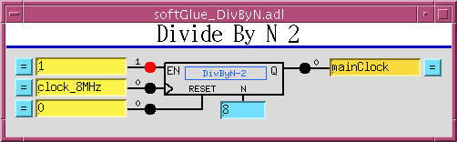
EN==1 enables the clock (">") input. Every N'th
rising edge of the clock drives Q to 1. The next
rising edge returns Q to 0. This behavior produces the correct number of rising edges of
the output signal, but it does not guarantee the same number of falling edges.
Therefore, using an inverted copy of the output to clock downstream electronics
will in some cases have inconsistent results.
When N==1, the divide circuitry is bypassed, and the
clock is connected directly to Q, if EN==1, or is set
to 0 if EN==0.
The RESET signal loads the
counter with N, so that Q will be driven to
1 after N rising edges of the clock.
RESET does not clear the output Q. If Q
is 1, it will be cleared on the first rising edge of the clock.
32-bit Up/Down Counter
EN==1 enables the clock (">") input. CLEAR==1 sets
the current count and the output value Q to zero. When
UP/DOWN==1 the counter counts up. LOAD sets the
current count to PRESET
Quadrature Decoder
This circuit converts a pair of digital quadrature signals A, B
(for example, signals from an encoder) into a pair of STEP, DIR
signals. A and B are samples on rising edges of the
CLOCK signal. If either have changed since the last rising edge,
the travel direction implied by the change is output to DIR, and a
pulse is output to STEP. The pulse width is equal to the period of
the CLOCK signal, and the input frequency may not be greater than
half the clock frequency.
Gate&Delay Generator
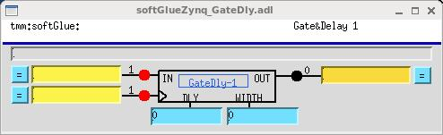
The rising edge of the input signal IN will appear at
OUT after DLY periods of the clock >.
If WIDTH is nonzero, it specifies the width in clock periods of
the output pulse. If WIDTH==0, the width of the input signal
will be used.
There is a faster version of this component, with 4 ns time resolution,
connected directly to field I/O, and clocked by a dedicated 250 MHz clock. The
fast versions are controlled by the same DLY and WIDTH registers as the normal
(softGlue-bus-connected) versions, but they only use the lower 16 bits of those
registers. fastGate&Delays 1-4 are hard wired to field inputs FI1-4,
respectively. By default, the outputs are not connected to field outputs. You
can change this by selecting "Configure" from the softGlueZynqMenu display. See
Miscellaneous configuration below.
Frequency Counter
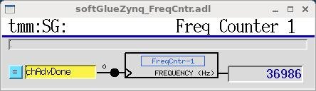
This component counts the number of rising edges per second
presented to the ">" input.
10 MHz internal clock
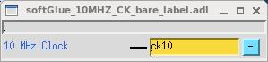
10, 20, and 50 MHz clocks, and one clock whose frequency can be varied with
roughly .1 MHz resolution, are available to softGlueZynq circuitry as free
standing outputs.
This display allows you to connect field I/O signals to each other and to
softGlueZynq circuits. Note that a "Field Input Bit" looks like and behaves as
a softGlueZynq output, because what you're actually controlling is the
output of a buffer driven by the field-input signal. Similarly, a "Field Output
Bit" looks like and behaves as a softGlueZynq input, because you're
actually controlling the input of a buffer that drives the field-output signal.
The signals in this display are the field inputs or outputs connected to
MicroZed I/O pins. As currently implemented, softGlueZynq supports 24 inputs
and 24 outputs configured for LVCMOS33, and 12 inputs configured for LVDS. The
LVCMOS33 outputs are TTL compatible, but the inputs must be limited to around
3.5 V.
You can change the "CONNECTOR #" strings in this display
— for example, to support a custom signal-breakout module, or to give the
I/O signals application-specific names. The strings are defined in
softGlueZynqApp/Db/softGlueZynq_FPGAContent.substitutions, as the
macro IOPIN supplied to softGlueZynq_FieldOutput.db
and softGlueZynq_FieldInput.db.
Field I/O Interrupt support
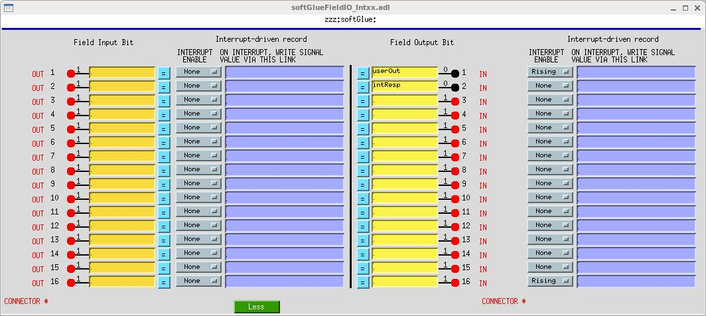
Field I/O lines supported by softGlueZynq can generate interrupts on rising
edges. You control this by setting the "INTERRUPT ENABLE" menu to
"Rising", or "None", respectively. Interrupts are masked by softGlueZynq's
interrupt handler until the current interrupt has been serviced.
When an interrupt occurs, you can have the signal value written to an EPICS
PV, by writing an EPICS link description into the purple box labelled "ON
INTERRUPT, WRITE SIGNAL VALUE VIA THIS LINK".
For interrupts that may occur too closely spaced in time for
softGlueZynq's EPICS-record-processing interrupt-response mechanism to handle
reliably, see "Custom Interrupt Handlers", below.
About EPICS links
In softGlueZynq displays (and in most other synApps displays), standard EPICS links are displayed as
purple text-entry boxes, in which you describe the link you want to make. For purposes here, an
EPICS link description is the name of an EPICS PV, followed by one of the following link attributes:
NPP
(default) write value, but do not cause processing.
PP
write value and cause processing (if the record containing the PV is "Process
Passive", which means that it's SCAN field has the value "Passive").
You should use this attribute unless you have some reason not to use it.
CA
write value and let the record containing the PV decide whether or not to process.
EPICS will tack on the string " NMS". This alarm-propagation attribute is not something
end users need to worry about.
For example, to cause a link to write effectively to the top input of the first AND gate
(whose PV name is zzz:softGlueZynq:AND-1_IN1_Signal, you would write the following
into a purple box:
zzz:softGlueZynq:AND-1_IN1_Signal PP
If you only write the PV name, EPICS will supply the link attribute NPP, and your link
will write a value, but the value won't have any effect until the next time the record processes.
(For most PV's in softGlueZynq, the value written by an NPP link won't even be displayed until the
record processes.)
Note: if the link writes to a PV in a different IOC, the specified link
attribute will be ignored, and the attribute "CA" will be used instead.
Convenience
This display controls two pulse generators implemented in EPICS, with links allowing them to
write to a softGlueZynq input (that is, to a yellow box), and, similarly, two clock generators
implemented in EPICS. The display also has MEDM related-display callups for two busy records,
The use of EPICS links (the purple boxes in the above display) is described above in
the section "About EPICS links", in the documentation of "Field I/O Interrupt support".
BusyRecord
This display controls the value, output link, and forward link of a busy record. In the
anticipated use with softGlueZynq, one would have some EPICS record outside of softGlueZynq set the busy
record to "Busy" (using a PP link), and arrange for a softGlueZynq interrupt bit (see "Field I/O
Interrupt support", above) to use its EPICS-output link to clear the busy record to "Done" (using a
CA link).
The use of EPICS links (the purple boxes in the above display) is described above in
the section "About EPICS links", in the documentation of "Field I/O Interrupt support".
It's important to set a busy record to "Busy" using a PP link, because the
purpose of a busy record is to represent some external processing as EPICS processing. This allows
EPICS' execution tracing to signal the completion of the processing. EPICS only traces processing
started or propagated with a PP link.
It's important to clear a busy record to "Done" with a CA link, because an EPICS PP link
will decline to process any record that is already processing. The busy record is written so that a
CA put will succeed in clearing it and causing its processing to appear done to EPICS.
Additional FPGA components
The following components are not general purpose, but are specific to an
experiment type or a measurement technique. Components in this category are not
guaranteed to be compatible with previous or future versions of themselves.
These are custom components, and they will evolve with user requirements.
16 Input Gated Scaler
This is a 16-input gated scaler with the first input dedicated to
determining the dwell time. Although the scaler16m display has
Gate fields for all inputs, the fields are currently fixed by the
FPGA content, and by the Epics device support code. Inputs 2-16 are hardwired
to field inputs 2-16. Field input 1 is available for use as a gate or clock.
Note that the scaler as shown here requires the synApps STD module, because
that module defines the EPICS scaler record. If the STD module is unavailable
or unwanted, you can drive the scaler with softGlueZynq's SGscaler.db database.
But also note that this database is unsupported, and was intended only as a way
for me to learn how to write scalerRecord device support for this scaler
hardware.
The frequency accuracy of softGlueZynq's 10 MHz clock was measured by
comparing it with the 10 MHz output of a Keysight 33600A waveform generator,
which claims few ppm accuracy. softGlueZynq's 10 MHz clock differed by around
24 ppm on the MicroZed I used for the measurement. I don't know if this is
representative of MicroZeds genrally, or how the frequency varies with
temperature.
The connections CNT, STOP, CLEAR, and
READ, and the PRESET value are driven by EPICS
scalerRecord device support, if the scaler database is loaded. The output
Q produces a short positive going pulse when the scaler is done
counting. The output CNTG goes high when the scaler starts
counting, and goes low when the count is done, either because counter 1 has
reached its preset, or because the user has cleared the scaler record's CNT
field (that is, pressed the "Done" button).
The user is responsible for the following connections:
connecting a softGlue clock signal to the scaler, and telling the scaler
record the clock frequency, as shown above.
enabling the scaler (the EN input), either with a constant
value, or with some softGlue signal name, as shown above.
connecting the scaler's Q output to field I/O output 16, and
setting that bit's interrupt enable to "Rising", as shown below. The scaler
record's device support currently is hard coded to use this interrupt source.
Histogramming Scaler
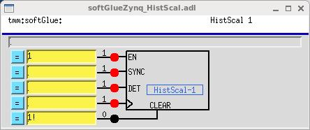
This is a one-input scaler with 64 time bins. While EN==1, it
counts pulses presented to DET into one of 64 scalers. When a
rising edge is presented to SYNC, the first scaler is selected.
Each time a rising edge is presented to the clock input, the next scaler is
selected. (Thus, the clock performs as the "channel advance" signal of a
multichannel scaler.) When CLEAR is high, all counters are cleared.
Scaler values are routed via DMA to EPICS, which collects them using an aSub
record, and presents them as an array of counts as a function of the channel
number - time elapsed since the most recent SYNC pulse.
There is a version of this component that can channel advance at up to 250
MHz. In the high speed version, the SYNC input is connected to the Q output of
fastGate&Delay-3, whose input is hardwired to FI-3; the DET input is connected
to the Q output of fastGate&Delay-4, whose input is hardwired to FI-4; and the
clock input is hardwired to a dedicated clock generator.
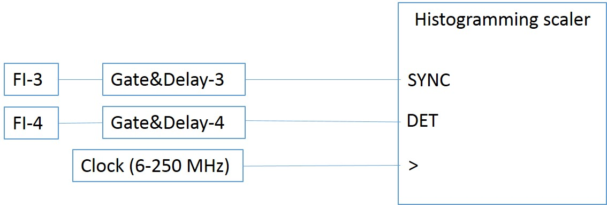
2D Microscope Data-Acquisition System ("pixelTrigger")
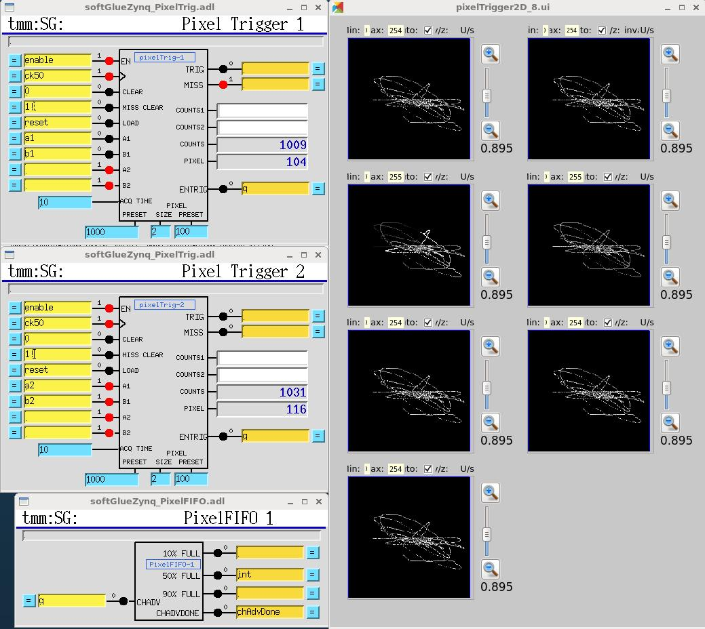
This system accepts four interferometer or encoder signals (digital
quadrature), which are the X and Y positions of a microscope lens and sample,
and produces pixel maps of detector data that were acquired in softGlueZynq
counters as the interferometer signals varied.
The user specifies how many interferometer edges are to represent the X and Y
sizes of the pixels. The circuit subtracts lens and sample positions to yield
the location, on the sample, of the focal spot. When the focal spot crosses a
pixel boundary, the circuit generates a data-acquisition trigger, which is used
internally and is also available externally. Internally, the trigger causes the
X,Y coordinates of the pixel, and the current values of seven counters, to be
copied into a FIFO for transmission to EPICS, and it clears the counters to
begin acquisition in the new pixel. The trigger pulse width is controllable
with the "ACQ TIME" input, in units of the clock period. This is intended to
limit the trigger rate to a value that external data acquisition electronics (a
camera or a multichannel scaler, perhaps) can handle.
EPICS software maintains seven 32-bit deep pixel maps into which it
histograms counter data according to the pixel coordinates in which those data
were acquired. At the right, above, are 16-bit images generated from the pixel
maps, in which are shown the X/Y trajectory of the focal spot as mechanical
vibrations travelled through the instrument. (The "instrument," in this case,
is my desktop, on which are interferometer heads and fixed mirrors pretending to
be a microscope. The mechanical vibrations are just me knocking on the
desktop.) caQtDM is required for the image display, because MEDM has no 2D
display widget for live data.
The maximum rate (number of pixel-boundary crossings per second) is around
400,000 pixels/s. This is determined by the worst case interrupt latency of the
Linux processor, because EPICS must start a DMA transfer to read the FIFO before
it fills up.
Here's a video demonstration of pixelTrigger:
Miscellaneous configuration
There are several features of softGlueZynq that are configurable by the end
user. Some of these are controlled with the softGlueZynqConfig display shown
below.
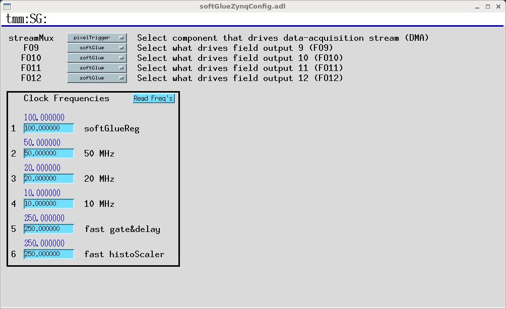
streamMux
The pixelTrigger, histogramming scaler, and fast histogramming scaler all use
the same data path from the FPGA to EPICS, but only one of them can use it at a
time.
Selected field-I/O points
The fast Gate&Delay generators make sense only if connected directly to field
I/O, because if they were connected to the softGlue signal bus, their inputs and
outputs would be clocked by the softGlue register clock, and this would defeat
the purpose of these components. Accordingly, the fast Gate&Delay generators
are connected to input pins 1-4, and can be connected to output pins 9-12.
The variable clock (fast histogrammer clock) can be connected directly to
output pin 24.
Clock frequencies
You can change the frequencies of any of the six clocks used in softGlueZynq,
but you need to know what you're doing if the changes are to be useful. Some
frequencies aren't stable. You should verify the frequency with the
frequency counter before relying on it.
You should probably never change the frequency of the softGlue-register
clock.
The nominally 10, 20, and 50 MHz clocks can be changed to
frequencies in the range 6-50 MHz, with roughly 5 MHz resolution.
The fast Gate&Delay clock can be changed to a frequency in the
range 6-300 MHz, with roughly 5 MHz resolution.
The fast histoScaler clock can be changed to a frequency in the
range 5-600 MHz, with roughly 0.1 MHz resolution.
Saving and restoring circuits
softGlueZynq circuits can be saved and restored using autosave,
autosave's configMenu facility, BURT, or
any channel access client that can read and write PV's. configMenu is
particularly handy, because it's driven by EPICS PVs, and because it saves a
time-stamped backup copy of every file it overwrites.
Whichever method you use, you may need to clear softGlueZynq signal names
before loading a circuit, because loading over an existing circuit could
temporarily exceed the available number of signal names. (Alternatively,
you could simply load twice, and be confident that the second load will
succeed.)
Saving and restoring circuits with autosave's configMenu facility
Note that the supplied copy of softGlueZynq.iocsh is already configured
to use configMenu. The following description is just to document how it's
done.
If you have autosave R5-1 or higher, you can use configMenu to save and
restore circuits. (autosave R5-7 supports an unlimited number of circuits.)
Here are the steps needed to implement a menu of softGlueZynq circuits, and
to give the user a GUI display for saving and restoring them. (In the
following, SG is the name of this instance of
configMenu. The files it loads and saves will be named "SG_<config Name>.cfg". For examples, the
configMenu instance pictured above has files named "SG_clear.cfg", "SG_encoderTest.cfg", etc.)
In the IOC's startup directory, create an autosave
request file, which I'll call "SGMenu.req", with
the following content:
softGlueZynq includes configMenu files (*.cfg) for standard example circuits
in the iocBoot/iocsoftGlueZynq directory. In actual use, these .cfg files would
be placed in your application's iocBoot/ioczzz/autosave directory. For more
information on configMenu, see the autosave documentation.
Example circuits
The following circuits have been tested and saved as configMenu .cfg files,
as described above (see Saving and Restoring Circuits). The .cfg files
are in iocBoot/iocsoftGlueZynq.
Motor-pulse gate
Positive-going pulses can be gated with an AND gate, by applying the signal to
one input of the AND gate, and setting the other input to 0(1) to deny(allow)
passage through the gate.
Negative-going pulses can be gated with an OR gate, by applying the signal
to one input of the OR gate, and setting the other input to 0(1) to
allow(deny) passage through the gate.
Gated scaler
gatedScaler.cfg
This circuit implements four counter channels, a time base to control
counting time, an overall gate, and additional circuitry to control
starting, stopping, and processing of the count-value records. Note
that the scaler is controlled by a busy record from the softGlueZynq
convenience database, so that client software can discover when counting
is finished in the standard EPICS way. See
gatedScaler.txt for more details.
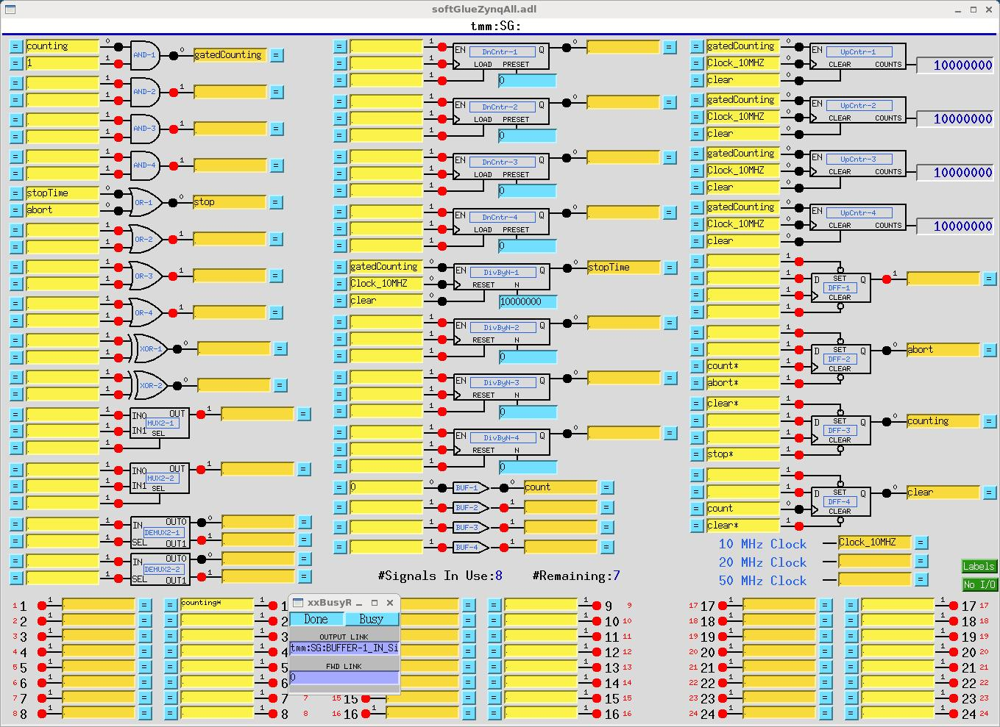
Four independent start-time/stop-time pulses
fourPulses.cfg
This circuit produces four separate pulse signals, which start at
specified start-delay times after (the falling edge of) an initial start
pulse, and which last for specified pulse-length times. It uses four
DnCntr's to implement the start-delay times, and four DivByN's to
implement the pulse-length times. Times are specified as multiples of
the (100 ns) clock period (PRESET for the DnCntr's;
N for the DivByN's), and these numbers must be greater than
or equal to 1. The pulse sequence starts on the falling edge of the
signal BUF-1, written by a periodically scanned EPICS
record (one of the softGlueZynq convenience clocks). One spare signal name
is available, however, so the pulse sequence could also be started by an
external signal.
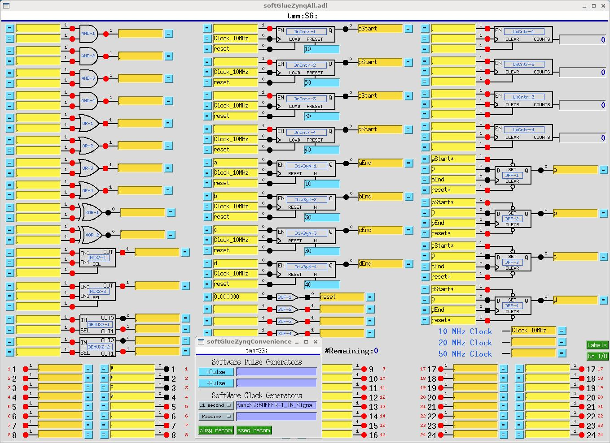
Motor-pulse accel/decel gate
accelDecelGate.cfg
If you know the number of steps a stepper motor will move during its acceleration time, you
can easily arrange to deliver motor pulses to some external circuit only while the motor is
moving at constant speed. For a stepper motor controlled by the motor record, the number of
acceleration/deceleration steps, Na, can be calculated with the following
formula:
Na = ((VBAS+VELO)/2)*ACCL/MRES
where, VBAS, VELO, ACCL, and MRES are
motorRecord fields.
The number of constant-speed steps, Nc, is then
Nc = ((VALend - VALstart)/MRES) -
2*Na
where VALend and VALstart are the final
and initial values of the motorRecord VAL field.
The following circuit accepts negative-going motor pulses at input signal 1, gates out
the first 11 (the value of DnCntr-1_PRESET), and from then on sends motor
pulses to output pin 17 until a total of 31 (the value of DnCntr-2_PRESET) have
been sent. The circuit is reset by writing "1!" (positive-going pulse) to the input of BUF-1.
The circuit includes some diagnostics, and a mechanism for testing:
UpCntr-1 counts all motor pulses; UpCntr-2 counts gated
motor pulses. Both counters are reset by the same signal that resets the gate circuit.
A manual reset is implemented using BUF-1. Writing "1!" to the input of BUF-1,
as shown, causes a short positive-going pulse to be applied to it, and thus to its output,
the signal named "reset".
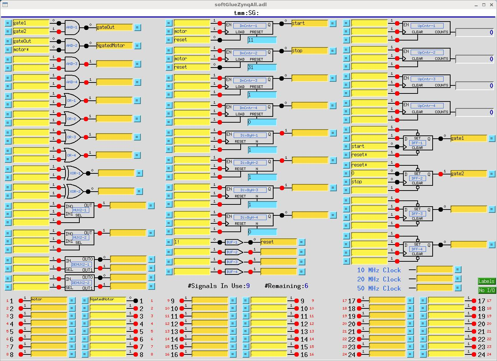
Down counter DnCntr-1, and flipflop DFF-1, together produce a gate
signal that is 0 after a reset, and that goes to 1 after DnCntr-1_PRESET motor
pulses. Down counter DnCntr-2, and flipflop DFF-2, together produce a
gate signal that is 1 after a reset, and that goes to 0 after DnCntr-2_PRESET motor
pulses. We load the number of acceleration steps into DnCntr-1_PRESET, and the
number of acceleration steps plus constant-speed steps into DnCntr-2_PRESET.
AND-1 combines the gate signals produced above into a signal that is 1 while
the motor is moving at constant speed.
AND-2 gates the negative-going motor pulses, using what
was described in the "Motor-pulse gate" example as a
positive-going-pulse gate, by inverting the "motor" signal before
applying it to the gate.
Note that the down counters are clocked by (rising edges of) "motor", to produce the
signal used to gate "motor*". This choice avoids a race condition between simultaneous
rising edges of "gateOut" and "motor". (This circuit gates negative-going motor pulses, so
another way to make the point is to say that the trailing edge of a motor pulse is used to
produce a gate that will be ready in plenty of time for the leading edge of the next motor
pulse.)
Calculations for the circuit are shown in the following screen capture of a transform
record.
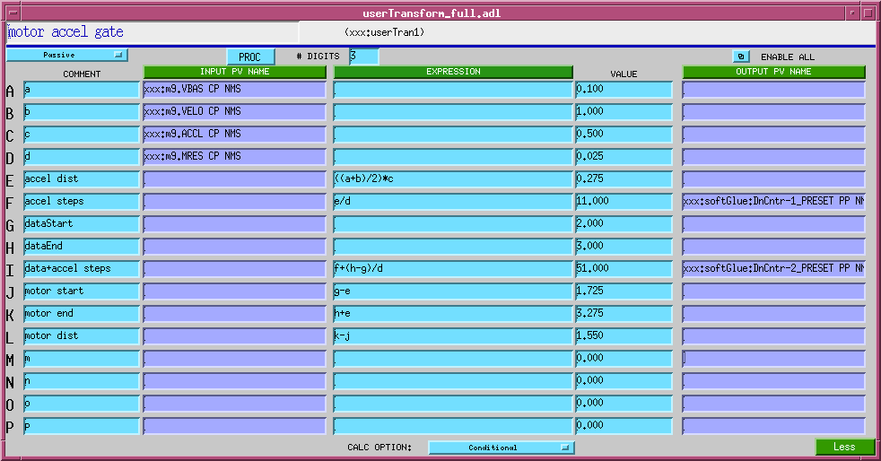
For more softGlue-circuit examples, see
softGlue_examples
Currently, the following circuits are documented:
softGlueZynq's normal interrupt-response mechanism allows you to specify the
execution of an EPICS output link, which will write to and possibly process a
specified EPICS record, whenever an enabled interrupt occurs. This mechanism is
unreliable for interrupts that are spaced in time by less than a few
milliseconds, because the EPICS processing is dispatched through message queues,
and requires several task switches before the target record gets processed.
For interrupts that may occur more closly spaced in time, you can write a
custom interrupt-handler routine, and tell softGlue to call it whenever an
enabled interrupt occurs. There is an example in the softGlueApp/src
directory: sampleCustomInterruptHandler.c.
sampleCustomInterruptHandler.c contains two functions:
sampleCustomInterruptPrepare()
This function gathers some information for use by
sampleCustomInterruptRoutine(), and tells softGlue to call
sampleCustomInterruptRoutine() from its interrupt-service routine
when a specified interrupt occurs. The interrupt is specified by
risingMask, and fallingMask, which specify one or more
bits. Currently, fallingMask is ignored. The address of
BUFFER-4_IN is stored for use by sampleCustomInterruptRoutine().
sampleCustomInterruptRoutine()
This function writes a pulse to the softGlue signal register whose address
was calculated by sampleCustomInterruptPrepare().
Other files in softGlueApp/src that help implement
sampleCustomInterruptHandler are Makefile, which builds it, and
softGlueSupport.dbd, which contains the line
registrar(sampleCustomInterruptRegistrar).
Interrupt-response time
On a microZed 7020, interrupt-response time
was measured using sampleCustomInterruptRoutine(), and routing the interrupt
response (BUFFER_4_OUT) to the clock input of a counter, and to an output pin.
The signal that generated the interrupt was also routed to the clock input of a
counter. On a scope, it's clear that interrupt-response times cluster around 30
microseconds, but there are outliers. These were characterized by comparing
counter values after many interrupts had been generated and serviced.
In initial tests, it was found that autosave reliably caused generated
interrupts to be missed whenever it wrote the auto_settings file. To measure
baseline performance, autosave was disabled.
Here are the results (with autosave disabled):
At 1 kHz, no misses in 10 minutes.
At 2 kHz, no misses in 10 minutes.
At 5 kHz, 27 misses in 10 minutes
At 10 kHz, 22 misses in 1 minute.
At 20 kHz, 2800 misses in 1 minute.
Implementation
Here's what a component looks like in the Xilinx Vivado block diagram:
The switches, synchronizing flipflops, and softGlue signal bus lines are all
contained in the big blue box, which Xilinx calls an "AXI4 peripheral." To us,
this means that it contains registers we can read and write from EPICS. Each
switch is controlled by an eight bit register, as detailed later in the section
"softGlueZynq register component."
Here is what that component looks like in the EPICS substitutions file
softGlue_FPGAContent.substitutions:
It's easy to add custom components to softGlue, and get them hooked up to
EPICS PVs. Making an MEDM display is also easy, because softGlue displays are
hierarchical, and nearly all the work has already been done. You just choose
the existing display that resembles what you want, add or delete inputs and
outputs, and rename stuff. Thus, softGlueZynq is useful not only for making
circuits by wiring existing components; it's also infrastructure to support
custom application-specific electronics.
For completeness, here's what that flipflop looks like in Verilog:
module flipflop (
input wire regClk, D, Clk, Set, Clear,
output reg Q
);
reg [1:0] rClk;
// detect rising edges
always @(negedge regClk) begin
rClk <= {rClk[0], Clk};
end
always @(negedge regClk) begin
if (~Set)
Q <= 1;
else if (~Clear)
Q <= 0;
else if (rClk==2'b01)
Q <= D;
end
endmodule
This Verilog file contains all of the information Vivado needs to make
a component that can be added to the softGlueZynq block diagram. There is a
recipe, in softGlueZynq/documentation/Vivado/README, for doing that.
FPGA-content files
softGlueZynq contains FPGA-content files, only one of which can be loaded at a
time.
softGlue_FPGAContent_7020.bin
This file contains standard softGlueZynq for a Zynq 7020 chip.
Database files
softGlueZynq_FPGAContent.substitutions
This substitutions file is run through msi at build time to
produce the database file softGlueZynq_FPGAContent.db. The
database file loads records matching most of the FPGA content that is loaded at
cold-boot time from softGlue_FPGAContent_7020.bin.
softGlueZynq_Input.db
softGlueZynq_Output.db
These databases each support a single softGlueZynq circuit-element I/O
bit.
These databases each support a single field I/O bit.
softGlueZynq_InRegister.db
This database supports reads from a 32-bit register.
softGlueZynq_IntBit.db
This database supports a single input bit, with an interrupt-driven bi
record to read the bit value, and a forward linked bo record to write that value
to some user specified EPICS PV.
softGlueZynq_IntEdge.db
This database controls the interrupt-enable mask for a single input bit.
softGlueZynq_Register.db
This database supports writes to a 32-bit register, such as the "N" value
for a divide-by-N circuit element.
softGlueZynq_SignalShow.db
This database implements part of softGlueZynq's mechanism for showing users
which signals are connected together. When a user presses a signal's "=
button", the signal's name is written to a PV in this database, against which PV
all softGlueZynq signals compare their own signal names, to determine whether or
not to display their "connected" boxes.
softGlueZynq_convenience.db
This database contains two busy records by which softGlueZynq can signal
completion to EPICS, two software pulse generators, and two software clock
generators.
These autosave request files correspond with similarly named database or
substitutions files, and take the same macro definitions.
softGlueZynq_settings.req
This autosave-request file includes
softGlueZynq_SignalShow_settings.req, softGlueZynq_FPGAContent_settings.req,
softGlueZynq_FPGAInt_settings.req, and softGlueZynq_convenience_settings.req.
For standard softGlueZynq, this is the only autosave-request file an IOC
needs.
Display files (MEDM, CSS-BOY, and caQtDM)
There are too many display files to describe individually, and many are
similar, so I'll just describe classes of display files, and the overall
implementation strategy. Displays whose names begin with "softGlueZynq_"
support individual circuit elements. Displays whose names are of the form
"softGlueXxx" (no underscore after "softGlueZynq") support collections of
circuit elements, either by implementing menus for calling up other
displays, or by including several "softGlueZynq_" displays. ("Include", in this
context, means specified as a "Composite File", with macro arguments, in the
definition of an MEDM grouped item, or specified as a "linkgroup" in
CSS-BOY.)
In the rest of this display-file documentation, I'll give MEDM examples.
For CSS-BOY examples, just substitute ".opi" for ".adl". For caQtDM,
substitute ".ui".
The display of a softGlueZynq circuit element is built in layers, from
instances of softGlueZynq_Input.adl and softGlueZynq_Output.adl, which are
included in softGlueZynq_<element name>_bare.adl, which in turn is
included in one of the user displays (for example, softGlueZynqAll.adl,
softGlueZynq_AND.adl, etc.).
softGlueZynqMenu.adl
softGlueZynqTop.adl
softGlueZynqMenu.adl contains related-display menus for
everything in softGlueZynq. softGlueZynqTop.adl is an example
of how softGlueZynqMenu.adl can be called up.
softGlueZynq_Input.adl
softGlueZynq_Output.adl
These displays support a single 16-bit register component (see "Driver", below) in the
FPGA, and most softGlueZynq circuit-element displays include several instances of these displays. For
example, softGlueZynq_AND_bare.adl includes two instances of softGlueZynq_Input.adl, and one instance of
softGlueZynq_Output.adl.
softGlueZynq_*.adl
softGlueZynq_*_bare.adl, where * is one of AND, BUFFER, DEMUX2, DFF, DivByN, DnCntr, MUX2, MUX4, OR, Shift32, UpCntr, XOR
These files each support a single circuit element, such as an AND gate. The "_bare.adl"
displays are intended to be included in some other display.
softGlueZynq_Field*.adl
softGlueZynq_Field*_bare.adl, where * is one of FieldInput, FieldOutput, IntBit. The "_bare.adl"
displays are intended to be included in some other display.
These files support a single field-I/O bit, or the interrupt control and dispatch records
associated with a field-I/O bit.
softGlueZynq register component
Most of softGlueZynq is implemented with registers implemented in the FPGA
controlling components connecting to standard digital circuitry, such as AND
gates, counters, etc., through interface circuitry of the following three types:
Input
An input is essentially a 16-input multiplexer controlled by a register that softGlueZynq
can write to and read from. Inputs 1-15 of all input multiplexers are connected together to form a
15-line bus, so that all inputs with the same multiplexer address are connected together.
Input 0 of the multiplexer is special: it connects to the "U" bit of the signal's control
register, instead of to a bus line, and is the means by which softGlueZynq implements direct user
control of the signal value. When the user writes "0" or "1" as a signal name, softGlueZynq sets the
multiplexer address to zero, and sets the "U" bit to 0 or 1.
A second register bit, "N", controls whether or not the multiplexer output is routed through an
inverter before connecting to the payload digital circuit element input; this bit is the means by
which softGlueZynq implements names like "reset*", which connects the input to an inverted copy of the
signal, "reset". The invert bit could be, but currently is not, used with the "U" bit.
bit:
7
6
5
4
3
2
1
0
function:
N
R
U
r
A3
A2
A1
A0
where
N
invert-signal bit
R
read bit
U
user-write bit
An
bus-line address bit
r
reserved for future use
Output
An output is a signal routed via a demultiplexer to any of 15 bus lines. No connection is made
to the demultiplexer output selected by the address 0; this address is used to implement unconnected
output signals.
bit:
7
6
5
4
3
2
1
0
function:
R
r
A3
A2
A1
A0
where R and An are as defined above for the input register.
32-bit register
integer value written by EPICS to a parameter register
with a fixed connection to a specific device instance.
Suggestions and Comments to:
Tim Mooney : (mooney@aps.anl.gov)